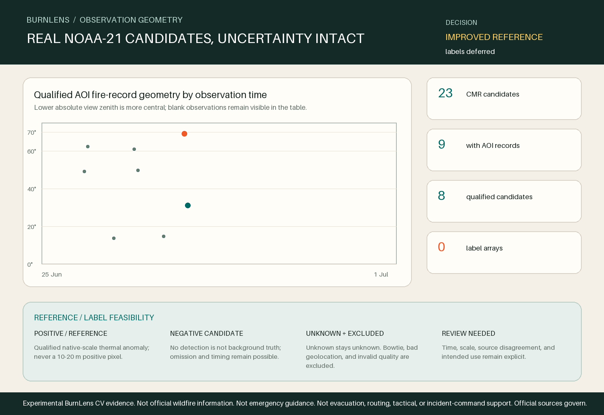

ACCEPT_COMPLEMENTARY_REFERENCE_GEOMETRY_DEFER_LABELS
One day NOAA-21 observation 2.48 hours from the Sentinel scene materially improves qualified AOI view geometry to a 31.01-degree median under the explicit BurnLens screen. Retain it as complementary native-scale reference evidence, but defer labels and a dataset because the larger time offset and 375 m support still cannot define 10-20 m segmentation truth.

OBSERVATION-GEOMETRY-2026-001, run BL-2026-07-14-observation-geometry-r002, source commit 89d50c24a696cc7e3ec023eec00b021a4a0cdda6.What the screen means
Post-approximate-start candidate; at least one nominal/high, nominal-geolocation, non-bowtie AOI record; candidate maximum qualified view zenith at least 10 degrees below the baseline minimum; residual-bowtie share no worse than baseline.
Among materially improved candidates, prefer the Sentinel day regime, then smallest absolute Sentinel time offset, then lower median view zenith and more qualified records.
Conservative BurnLens evidence-screen rule, not a NASA validation threshold and not a label-validity claim.
Every candidate and exclusion reason
| Acquisition | Begin UTC | AOI records | Qualified | Median view | Bowtie | Screen result |
|---|---|---|---|---|---|---|
A2024177.0848 | 2024-06-25T08:48:00.000Z | 0 | 0 | — | 0 | PRE_APPROXIMATE_EVENT_START, NO_REFERENCE_QUALIFIED_AOI_RECORD |
A2024177.1030 | 2024-06-25T10:30:00.000Z | 0 | 0 | — | 0 | PRE_APPROXIMATE_EVENT_START, NO_REFERENCE_QUALIFIED_AOI_RECORD |
A2024177.2012 | 2024-06-25T20:12:00.000Z | 2 | 1 | 49.14° | 0 | MATERIAL_GEOMETRY_IMPROVEMENT |
A2024177.2154 | 2024-06-25T21:54:00.000Z | 25 | 9 | 62.22° | 7 | VIEW_GEOMETRY_MARGIN_NOT_MET |
A2024178.1012 | 2024-06-26T10:12:00.000Z | 56 | 56 | 13.64° | 0 | MATERIAL_GEOMETRY_IMPROVEMENT |
A2024178.1954 | 2024-06-26T19:54:00.000Z | 22 | 16 | 60.94° | 6 | VIEW_GEOMETRY_MARGIN_NOT_MET |
A2024178.2136 | 2024-06-26T21:36:00.000Z | 2 | 1 | 49.75° | 0 | MATERIAL_GEOMETRY_IMPROVEMENT |
A2024179.0954 | 2024-06-27T09:54:00.000Z | 20 | 20 | 14.62° | 0 | MATERIAL_GEOMETRY_IMPROVEMENT |
A2024179.1936 | 2024-06-27T19:36:00.000Z | 8 | 5 | 69.02° | 3 | VIEW_GEOMETRY_MARGIN_NOT_MET |
A2024179.2118 | 2024-06-27T21:18:00.000Z | 13 | 11 | 31.01° | 0 | MATERIAL_GEOMETRY_IMPROVEMENT |
A2024180.0930 | 2024-06-28T09:30:00.000Z | 0 | 0 | — | 0 | NO_REFERENCE_QUALIFIED_AOI_RECORD |
A2024180.1112 | 2024-06-28T11:12:00.000Z | 0 | 0 | — | 0 | NO_REFERENCE_QUALIFIED_AOI_RECORD |
A2024180.2054 | 2024-06-28T20:54:00.000Z | 4 | 0 | — | 0 | NO_REFERENCE_QUALIFIED_AOI_RECORD |
A2024181.0912 | 2024-06-29T09:12:00.000Z | 0 | 0 | — | 0 | NO_REFERENCE_QUALIFIED_AOI_RECORD |
A2024181.1054 | 2024-06-29T10:54:00.000Z | 0 | 0 | — | 0 | NO_REFERENCE_QUALIFIED_AOI_RECORD |
A2024181.2036 | 2024-06-29T20:36:00.000Z | 0 | 0 | — | 0 | NO_REFERENCE_QUALIFIED_AOI_RECORD |
A2024182.0854 | 2024-06-30T08:54:00.000Z | 0 | 0 | — | 0 | NO_REFERENCE_QUALIFIED_AOI_RECORD |
A2024182.1036 | 2024-06-30T10:36:00.000Z | 0 | 0 | — | 0 | NO_REFERENCE_QUALIFIED_AOI_RECORD |
A2024182.2018 | 2024-06-30T20:18:00.000Z | 0 | 0 | — | 0 | NO_REFERENCE_QUALIFIED_AOI_RECORD |
A2024182.2200 | 2024-06-30T22:00:00.000Z | 0 | 0 | — | 0 | NO_REFERENCE_QUALIFIED_AOI_RECORD |
A2024183.1018 | 2024-07-01T10:18:00.000Z | 0 | 0 | — | 0 | NO_REFERENCE_QUALIFIED_AOI_RECORD |
A2024183.2000 | 2024-07-01T20:00:00.000Z | 0 | 0 | — | 0 | NO_REFERENCE_QUALIFIED_AOI_RECORD |
A2024183.2142 | 2024-07-01T21:42:00.000Z | 0 | 0 | — | 0 | NO_REFERENCE_QUALIFIED_AOI_RECORD |
Weak/reference-label feasibility protocol
- Positive/reference
- A nominal/high VIIRS sparse record with nominal geolocation QA and no residual-bowtie flag may remain a native-scale thermal-anomaly reference at its observation time. It is not a segmentation-positive pixel.
- Negative candidate
- A clear, in-AOI optical location without a coincident qualified VIIRS record is only a negative candidate. Non-detection is not background truth because omission, timing, cloud, smoke, mixed pixels, and scan geometry remain possible.
- Unknown
- Every location not supported by an allowed reference or explicitly excluded remains unknown; unknown is never silently converted to background.
- Excluded
- Residual-bowtie records, non-nominal geolocation QA, invalid coordinates, and unusable optical quality states are excluded from reference use.
- Review needed
- Qualified native-scale records still require review for time offset, cross-sensor scale, source disagreement, and intended use before any future label proposal.
Permitted claims
- NASA CMR returned 23 intersecting VJ214IMG.002 granules in the frozen window and AOI.
- BurnLens opened every exact candidate and found AOI sparse fire records in 9 candidates.
- The comparison preserves provider QA, time, geometry, source agreement, and exclusion evidence without creating labels.
Prohibited claims
- A thermal-anomaly point or later perimeter is pixel-perfect segmentation truth.
- No VIIRS detection means ordinary background.
- The screen is official, operational, emergency-ready, field-validated, or endorsed.
Traceability
- Repository
- drwbkr1/burnlens-deschutes
- Software
- 0.5.0
- Raw package
- darlene3-vj214img-observation-screen-v0.2.0
- AOI
- aoi-darlene3-model-v0.2.0
- Dataset / label schema / model
- Not created / not created / not created
- Run
BL-2026-07-14-observation-geometry-r002- Source commit
89d50c24a696cc7e3ec023eec00b021a4a0cdda6
Primary sources
- NASA CMR — granule temporal, spatial, paging, and deterministic sort semantics
- NASA Earthdata / LP DAAC — VJ214IMG definition, 375 m support, companion requirement, variables, citation, and open sharing
- NASA — fire-mask classes, sparse arrays, QA bits, scan geometry, and limitations
Official sources govern over every BurnLens-derived artifact.
Experimental BurnLens CV evidence. Not official wildfire information. Not emergency guidance. Not evacuation, routing, tactical, or incident-command support. Official sources govern.